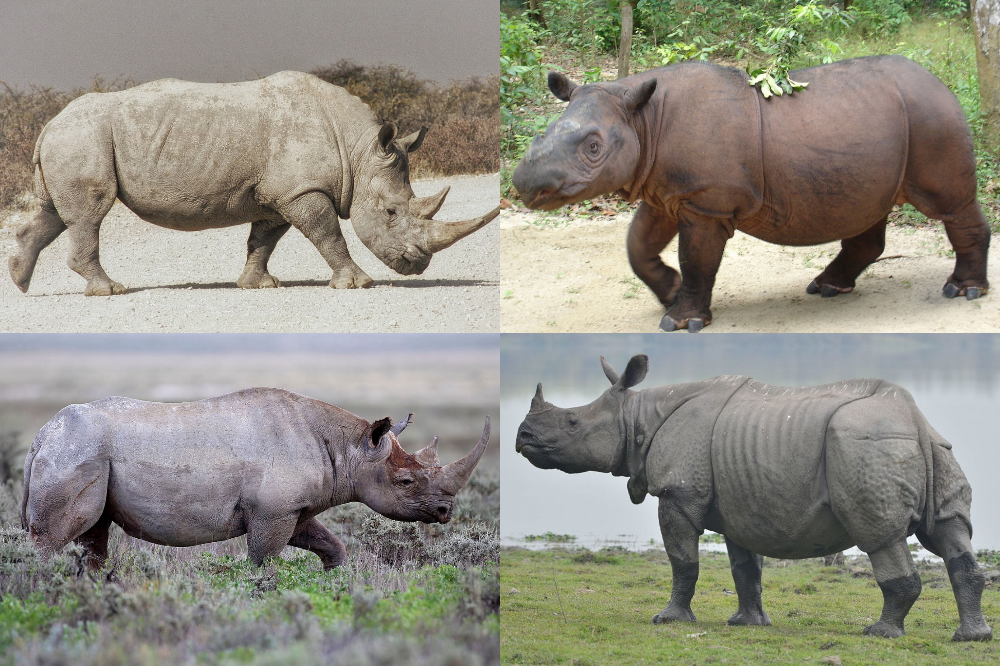
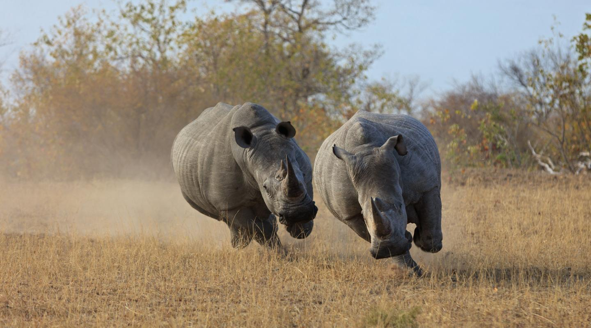
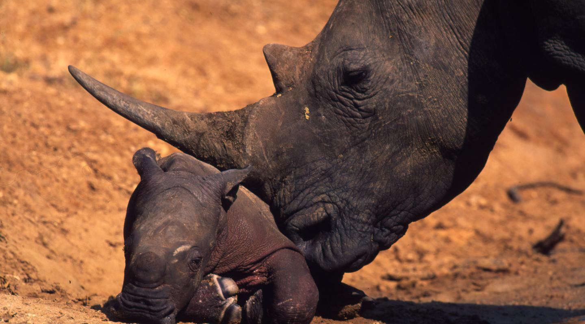
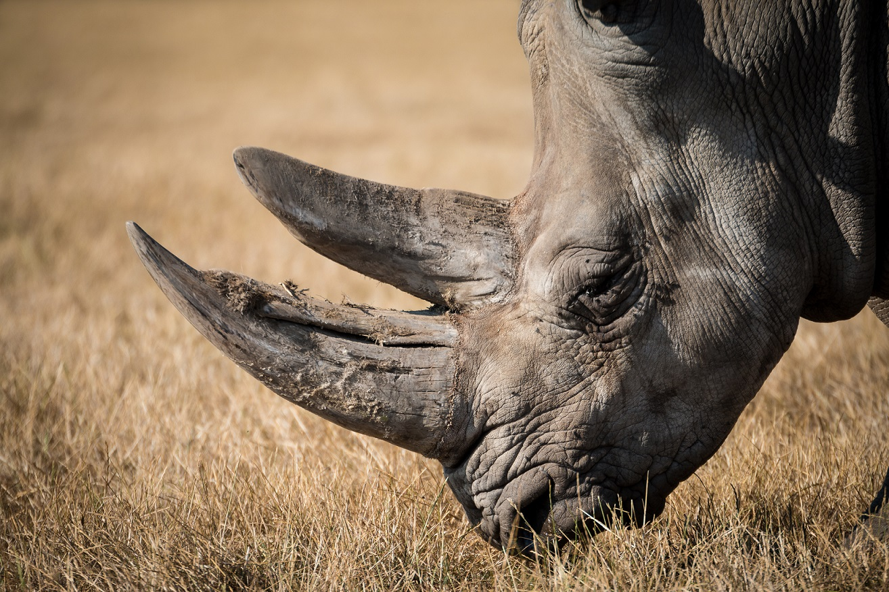
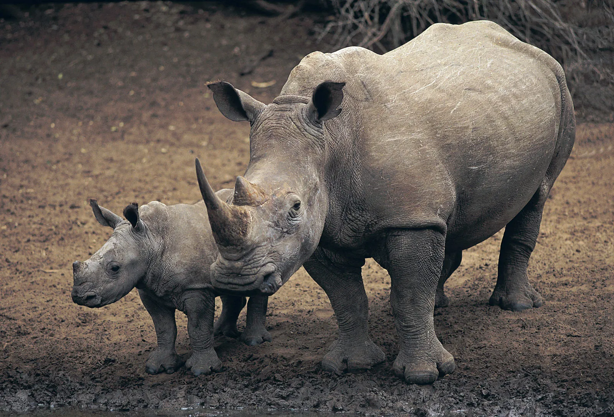
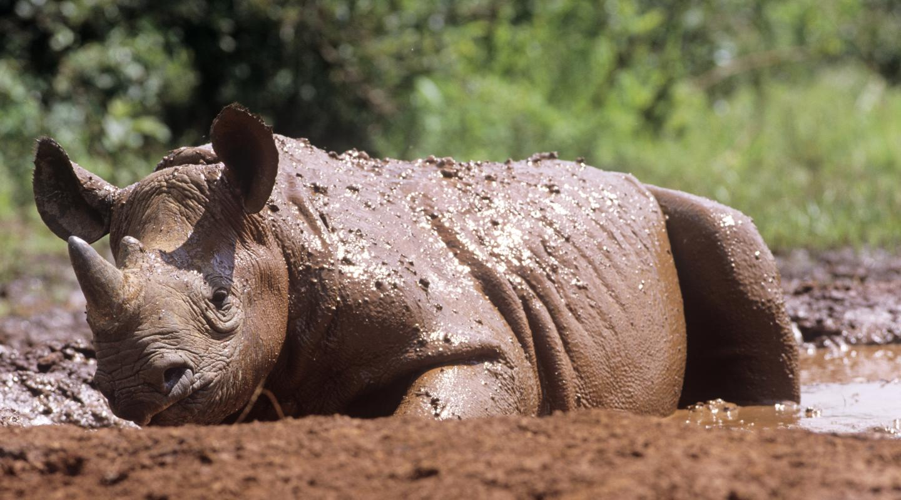
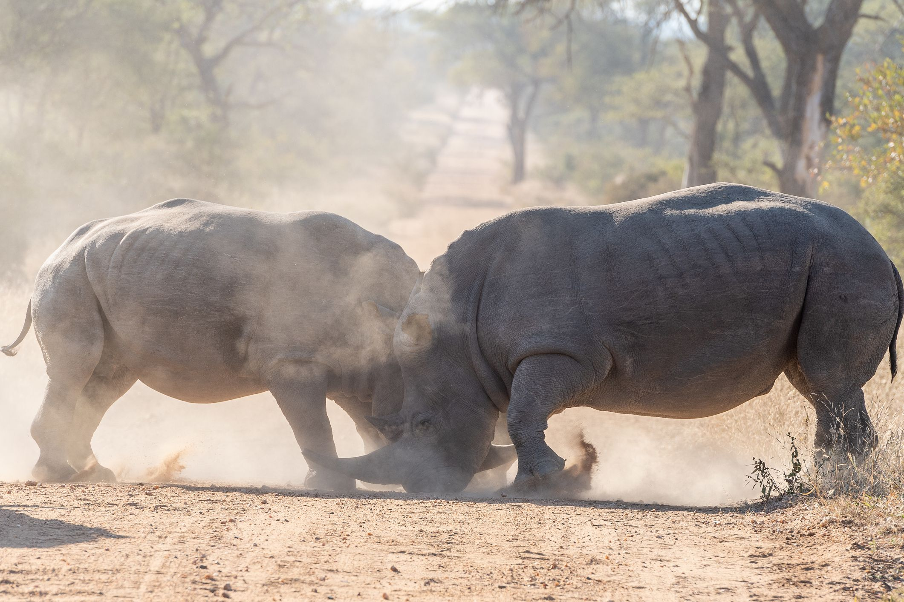
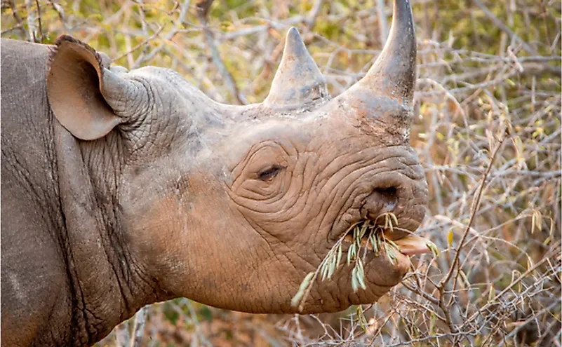

AFRICAN RHINOCEROUS
-

THERE ARE 5 SPECIES OF RHINO IN THE WORLD:
- African Balck and White Rhino
- The Asian one–horned, Sumatran and Javan rhinos
-

Sumatran rhinos are the smallest of all rhinos, but they can still weigh 600kg (that’s almost 95 stone). On the other hand, white rhinos are the largest of the rhino species, weighing up to 3,500 kg. That is more than 550 stones
-

Male rhinos are called 'bulls' and females are called 'cows'. Their young are ‘calves’. Females tend to be more sociable than the more solitary, territorial males. Together, a group of rhinos is called a ‘crash’.
-

Rhino horn is made up of keratin - the same protein which forms the basis of our hair and nails.
-

During confrontations, they growl and make 'trumpet calls'. Black rhinos snort when they’re angry, make sneeze-like calls as alarms, scream if they’re scared and ‘mmwonk' when relaxed. Rhinos also communicate through their poo and urine. When rhino poo in the same place as other rhinos – an area known as a latrine – they can smell the poo and urine of other individuals, and know who's in the area.
-

Rhinos love being in the mud as it enables protection from insect bites, Helps regulate body tempreture.
-

Rhinos occasionaly fight to earn the right to mate, males engage in intense fights. These bouts can be harsh, often resulting in severe injuries. The territorial fights pose a significant threat to rhino conservation, as these aggressive creatures can deplete their already small populations
-

Rhinos are herbivours